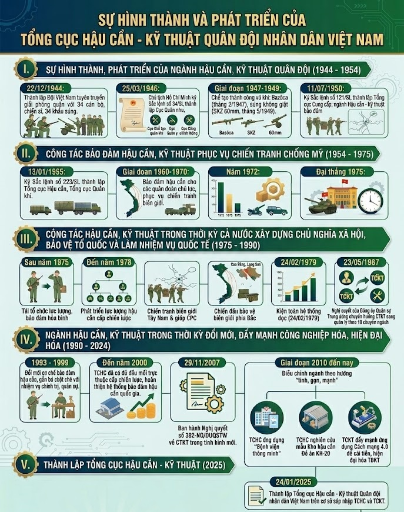

Theo chỉ đạo của Chủ tịch Hồ Chí Minh, ngày 22 tháng 12 năm 1944, Đội Việt Nam tuyên truyền giải phóng quân được thành lập. Đội có 34 cán bộ, chiến sĩ, được trang bị 34 khẩu súng các loại, cùng một số lựu đạn, mìn và 20 đồng bạc Đông Dương để chi tiêu nuôi dưỡng, thuốc men cho đơn vị. Ngay sau khi thành lập, Đội đã ra quân đánh thắng trận đầu, tiêu diệt gọn quân địch ở hai đồn Phai Khắt (đêm 25/12) và Nà Ngần (sáng 26/12/1944). Trong hoạt động và chiến đấu những ngày đầu mới thành lập, việc tiếp tế cho Đội do các cơ sở quần chúng, các đoàn thể phụ nữ địa phương đảm nhiệm.
Cách mạng Tháng Tám năm 1945 thành công, Tổ quốc được độc lập, Nhân dân ta được tự do, làm chủ đất nước. Sau tổng tuyển cử bầu Quốc hội khóa I (06/01/1946), Chính phủ Liên hiệp được thành lập. Ngày 25 tháng 3 năm 1946, Chủ tịch Hồ Chí Minh ký Sắc lệnh số 34/SL về tổ chức Bộ Quốc phòng, trong đó có Quân nhu Cục, Chế tạo quân giới Cục, Quân y Cục và Công chính giao thông Cục. Đến thời kỳ này, ngành Hậu cần - Kỹ thuật đã bước đầu hình thành ở các cấp theo chuyên ngành và bước đầu có sự chỉ đạo, bảo đảm một số nhu cầu thiết yếu của Quân đội, đặt những viên gạch đầu tiên, tạo nền móng cho sự ra đời và phát triển của ngành Hậu cần, Kỹ thuật trong Quân đội. Năm 1946, khi cuộc kháng chiến chống thực dân Pháp bùng nổ, lực lượng Hậu cần, Kỹ thuật khẩn trương di chuyển các cơ sở quân nhu, quân y, quân giới lên căn cứ địa Việt Bắc. Để đánh vào đồn, bốt của địch, cuối tháng 02/1947, Cục Quân giới và Nha Nghiên cứu kỹ thuật chế tạo thành công súng và đạn Bazôca. Tháng 5/1949, đồng chí Trần Đại Nghĩa cùng các kỹ sư Cục Quân giới đã chế tạo thành công súng không giật SKZ 60mm... Những sáng chế đó góp phần quan trọng bảo đảm trang bị cho Quân đội ta chiến đấu thắng lợi và từng bước hình thành hệ thống chỉ đạo, sản xuất, sửa chữa, bảo quản, vận chuyển, cấp phát vũ khí, đạn trong Quân đội. Ngày 18 tháng 6 năm 1949, Chủ tịch Hồ Chí Minh ký Sắc lệnh số 50/SL về tổ chức và nhiệm vụ của cơ quan Bộ Quốc phòng - Tổng Tư lệnh, quyết định thành lập Cục Vận tải, thuộc Bộ Tổng Tham mưu.
Thực hiện Nghị quyết Hội nghị toàn quốc lần thứ Ba của Đảng (tháng 01 năm 1950), ngày 11 tháng 7 năm 1950, Chủ tịch Hồ Chí Minh ký Sắc lệnh 121/SL quy định tổ chức Bộ Quốc phòng - Tổng Tư lệnh, gồm ba cơ quan: Bộ Tổng Tham mưu, Tổng cục Chính trị, Tổng cục Cung cấp. Nhiệm vụ của Tổng cục Cung cấp là quản trị, trang bị, cấp dưỡng quân đội và sản xuất quốc phòng, gồm các cục: Quân lương, Quân trang, Quân y, Quân giới, Vận tải, Quân vụ và phòng Quân khí. Trước đó, cùng với sự ra đời của các đại đoàn chủ lực các ban quân khí được thành lập để đảm bảo TBKT và sửa chữa vũ khí. Đến ngày 01/9/1951, Đại tướng Võ Nguyên Giáp, Bộ trưởng Bộ Quốc phòng, Tổng Tư lệnh Quân đội nhân dân Việt Nam ký Quyết định số 227/QĐ về việc thành lập Cục Quân khí trực thuộc Tổng cục Cung cấp, trên cơ sở Phòng Quân khí.
Ngay sau khi ra đời Tổng cục Cung cấp đã bảo đảm công tác hậu cần, kỹ thuật phục vụ các lực lượng vũ trang mở các chiến dịch quy mô ngày càng lớn. Ngày 25 tháng 6 năm 1952, Chủ tịch Hồ Chí Minh đến thăm và nói chuyện với Hội nghị cung cấp toàn quân lần thứ nhất, Người căn dặn: “Công việc cung cấp cũng quan trọng như việc trực tiếp đánh giặc ngoài mặt trận” và “... Các chú phải làm thế nào một bát gạo, một đồng tiền, một viên đạn, một viên thuốc, một tấc vải phải đi thẳng tới chiến sĩ...”.
Đặc biệt, trong chiến dịch Điện Biên Phủ, ngành Hậu cần, Kỹ thuật đã bảo đảm đầy đủ, kịp thời vũ khí, khí tài cho chiến đấu, lương thực, thực phẩm nuôi dưỡng bộ đội và cấp cứu, điều trị cho hàng nghìn lượt thương-bệnh binh, góp phần to lớn vào chiến thắng lịch sử Điện Biên Phủ. Đây là minh chứng cho bước phát triển vượt bậc của ngành Hậu cần, Kỹ thuật quân đội, cho công tác hậu cần, kỹ thuật.
Sau thắng lợi của cuộc kháng chiến chống thực dân Pháp, đất nước tạm bị chia làm hai miền. Cùng với các lực lượng vũ trang nhân dân, ngành Hậu cần Quân đội đã tích cực tham gia khôi phục kinh tế, góp phần tăng cường tiềm lực mọi mặt của hậu phương; bảo đảm và phục vụ Quân đội xây dựng chính quy, hiện đại trên miền Bắc; giữ gìn lực lượng, khôi phục các cơ sở hậu cần ở miền Nam; đồng thời, tích cực xây dựng ngành tiến dần từng bước lên chính quy hiện đại. Tổng Quân ủy và Bộ Quốc phòng chỉ đạo xây dựng lại hệ thống bảo đảm công tác hậu cần, công tác kỹ thuật toàn quân. Theo quyết định ngày 13/01/1955 của Bộ Quốc phòng, Tổng cục Cung cấp đổi tên thành Tổng cục Hậu cần. Tổng cục Hậu cần có các cục: Quân nhu, Quân y, Vận tải, Quân giới, Quân khí, Chính trị, Văn phòng và Phòng Sản xuất trang dụng. Ở các Liên khu (từ cuối năm 1956 thành lập các quân khu) có phòng hậu cần. Đến giữa năm 1962, phòng hậu cần quân khu chuyển thành cục hậu cần, các ban chuyển thành các phòng thuộc cục.
Năm 1960, cách mạng miền Nam chuyển sang thế tiến công, nhu cầu vũ khí, trang bị đòi hỏi ngày càng lớn. Theo chỉ thị của Bộ Chính trị và Quân ủy Trung ương, ngành Hậu cần đã nhanh chóng tổ chức lực lượng chi viện. Hai tuyến vận tải chiến lược được mở ra, góp phần phục vụ đắc lực các lực lượng vũ trang xây dựng, chiến đấu cùng đồng bào miền Nam làm phá sản chiến lược “Chiến tranh đặc biệt” của đế quốc Mỹ.
Năm 1965, đế quốc Mỹ phải chuyển sang chiến lược “Chiến tranh cục bộ”, ồ ạt đưa quân vào miền Nam và tiến hành “Chiến tranh phá hoại” miền Bắc. Năm 1966, Cục Vận tải được thành lập lại; ngày 24/8/1968 Bộ Quốc phòng quyết định tách Phòng Xăng dầu khỏi cục Quản lý xe để thành lập Cục Xăng dầu; tháng 6/1968, Trường Đại học Kỹ thuật quân sự được thành lập (nay là Học viện KTQS); nhiều nhà máy, dây chuyền mới sản xuất, sửa chữa vũ khí, đạn dược thuộc Cục Quân giới và các quân khu, quân chủng, binh chủng được thành lập. Ngày 04/9/1969, Cục Kỹ thuật Quân chủng Phòng không - Không quân được thành lập; ngày 06/5/1970, Cục Kỹ thuật Quân chủng Hải quân được thành lập. Chiến tranh phá hoại và ngăn chặn của không quân, hải quân Mỹ, phần lớn nhằm vào các cơ sở hậu cần, các tuyến đường, lực lượng và phương tiện giao thông vận tải. Nhờ đường lối đúng đắn, sáng tạo, độc lập, tự chủ của Đảng, chỗ dựa vững chắc là hậu cần nhân dân, đồng thời, tranh thủ được sự giúp đỡ quốc tế, hậu cần quân đội đã phát triển vượt bậc về mọi mặt, vượt qua khó khăn, gian khổ ác liệt, liên tục bảo đảm phục vụ tác chiến hiệp đồng quân binh chủng quy mô ngày càng lớn trong các chiến dịch, các cuộc tiến công chiến lược ở miền Nam. Năm 1972, Cục Quân khí đã cung cấp cho các đơn vị 20.559 tấn vũ khí trang bị (9.540 tấn vũ khí, 11.019 tấn đạn), Cục Quản lý xe đã sửa chữa và bàn giao cho đơn vị 4.715 xe ô tô, sửa chữa 250 xe xích kéo pháo cho Quân chủng Phòng không - Không quân, sản xuất hàng nghìn tấn phụ tùng vật tư ô tô, hàng trăm tấn phụ tùng xe xích, góp phần cùng với quân và dân cả nước giành thắng lợi ở chiến trường miền Nam và Chiến dịch “Điện Biên phủ trên không” ở miền Bắc vào cuối năm 1972, buộc Mỹ phải ký Hiệp định Paris (ngày 27/01/1973), chấm dứt chiến tranh, lập lại hoà bình ở Việt Nam và rút quân về nước.
Ngày 13/10/1973, Hội nghị lần thứ 21 Ban Chấp hành Trung ương Đảng khóa III ra Nghị quyết về hoàn thành cuộc cách mạng dân tộc, dân chủ, nhân dân ở miền Nam. Ngày 10/9/1974, Thủ tướng Chính phủ Phạm Văn Đồng ký Nghị định số 211/CP về việc thành lập Tổng cục Kỹ thuật thuộc Bộ Quốc phòng. Tổng cục Kỹ thuật được thành lập đánh dấu bước phát triển quan trọng của công tác kỹ thuật toàn quân, tạo điều kiện thuận lợi để ngành Kỹ thuật Quân đội thực hiện nhiệm vụ theo sự chỉ đạo tập trung, thống nhất từ một cơ quan đầu ngành, đáp ứng yêu cầu nhiệm vụ giải phóng dân tộc. Ngày 10/9/1974 trở thành Ngày truyền thống của Tổng cục Kỹ thuật.
Trong giai đoạn chuẩn bị và mở Chiến dịch Tây Nguyên, Tổng cục Hậu cần đã tổ chức vận chuyển cấp tốc, bí mật Sư đoàn 316 từ Tân Kỳ, Nghệ An vào chiến trường và cùng hàng vạn tấn vũ khí, khí tài, xăng dầu, lương thực, thực phẩm cung cấp cho các đơn vị; Tổng cục Kỹ thuật đã tổ chức các tổ, đội, trạm sửa chữa cơ động và cấp phát kịp thời, an toàn, bí mật hàng ngàn tấn vũ khí, đạn dược cho các đơn vị, góp phần rất quan trọng vào chiến thắng Chiến dịch Tây Nguyên, sau là Chiến dịch Huế - Đà Nẵng.
Trong giai đoạn chuẩn bị cho Chiến dịch Hồ Chí Minh, Cục Vận tải đã huy động hàng vạn phương tiện vận chuyển cơ động Quân đoàn 1 từ Tam Điệp, Ninh Bình và các đơn vị binh chủng từ miền Bắc vào Nam bộ; lực lượng xăng dầu đã xây lắp thêm hàng trăm km đường ống nối dài vào khu vực Sài Gòn-Gia Định; lực lượng quân y đã đưa hàng trăm bác sĩ, y tá, xây dựng các bệnh viện dã chiến theo sau các mặt trận. Tổng cục Kỹ thuật đã chỉ đạo các cục chuyên ngành cử hàng trăm cán bộ, nhân viên kỹ thuật tăng cường và BĐTB, BĐKT ưu tiên cho các quân đoàn chủ lực; các quân chủng, binh chủng.
11 giờ 30 phút cùng ngày, lá cờ chiến thắng của cách mạng phấp phới tung bay trên nóc dinh Độc lập, Chiến dịch mang tên Chủ tịch Hồ Chí Minh vĩ đại đã toàn thắng. Trong Chiến dịch Hồ Chí Minh lịch sử, ngành Hậu cần, Kỹ thuật đã bảo đảm đầy đủ, kịp thời vật chất hậu cần, kỹ thuật cho các đơn vị tác chiến thắng lợi, góp phần rất quan trọng vào thắng lợi của Chiến dịch.
Sau ngày miền Nam hoàn toàn giải phóng, đất nước ta tiến hành hai nhiệm vụ chiến lược là xây dựng và bảo vệ Tổ quốc Việt Nam XHCN. Nhiệm vụ đặt ra cho Tổng cục Hậu cần, Tổng cục Kỹ thuật những yêu cầu mới, trước hết là chấn chỉnh tổ chức lực lượng phù hợp với yêu cầu, nhiệm vụ. Về công tác hậu cần, Tổng cục Hậu cần đã tiếp quản, sửa chữa, củng cố các bệnh viện quân y của chế độ cũ, đưa vào phục vụ quân đội; tiến hành di chuyển các kho hậu cần từ rừng sâu về các thành phố, thị xã theo quy hoạch thời bình và tiếp nhận toàn bộ Đoàn 559 về Tổng cục. Đồng thời, bảo đảm hậu cần thường xuyên cho các đơn vị và chuyển một số lực lượng sang làm nhiệm vụ xây dựng kinh tế.
Về công tác kỹ thuật, tập trung thực hiện 3 nhiệm vụ là: (1) Khẩn trương thu hồi, quản lý, bảo quản, sửa chữa và có kế hoạch sử dụng các cơ sở vật chất kỹ thuật thu được của địch; (2) Nhanh chóng thu gom các loại TBKT, vật tư của ta còn trên các tuyến vận tải quân sự, các địa phương để bảo quản tốt hơn, kiện toàn hệ thống kho tàng; (3) Đi đôi với việc xây dựng nền kinh tế độc lập tự chủ, ta cần kết hợp tích cực xây dựng nền công nghiệp quốc phòng có sửa chữa, có sản xuất, từng bước sản xuất các vũ khí hiện đại cần thiết, tiến đến tự trang bị vũ khí, kỹ thuật hiện đại cho LLVT.
Thực hiện chủ trương kiện toàn tổ chức, xây dựng lực lượng để phù hợp với tình hình mới, Tổng cục đã chấn chỉnh, tổ chức lại hệ thống kho tàng, xây dựng các nhà máy, xí nghiệp sửa chữa, sản xuất gồm: 24 kho vũ khí đạn, 09 kho xe máy và vật tư xe máy, 04 xưởng sửa chữa vũ khí, khí tài, 08 xưởng sửa chữa ô tô, 08 xí nghiệp sản xuất vũ khí, khí tài, 05 xí nghiệp sản xuất phụ tùng linh kiện. Đến năm 1978, Tổng cục có 61 đầu mối trực thuộc, gồm 13 cục và tương đương, 01 viện, 04 phân viện, 08 trường, 28 xí nghiệp, 02 trung đoàn vận tải và 05 phòng, ban trực thuộc.
Tháng 12/1977, tập đoàn phản động Pôn Pốt, Iêng Sa Ry đã tiến hành xâm lấn biên giới, tàn sát giết hại hàng nghìn đồng bào ta rất dã man, buộc chúng ta phải tiến hành chiến tranh bảo vệ biên giới Tây Nam và giúp nhân dân Campuchia đứng lên đánh đổ chế độ diệt chủng (ngày 07/01/1979). Trong giai đoạn này, TCHC đã vận chuyển bảo đảm vật chất hậu cần cho các đơn vị làm nhiệm vụ quốc tế tại Campuchia; đồng thời, chỉ đạo hậu cần các đơn vị đẩy mạnh khai thác hậu cần tại chỗ, kết hợp tăng gia sản xuất để bảo đảm đời sống bộ đội. Tổng cục Kỹ thuật đã tổ chức Sở chỉ huy Tiền phương và huy động hàng nghìn pháo, cối, ĐKZ, gần 02 vạn tấn đạn dược, bom, mìn các loại và hàng nghìn tấn vật tư, phụ tùng; các nhà máy của Tổng cục tăng cường sản xuất, sửa chữa TBKT và cử các đội sửa chữa cơ động đến các đơn vị chiến đấu BĐKT tại chỗ. Sau giải phóng Campuchia, Tổng cục tổ chức các trạm, đội cơ động làm nhiệm vụ thu gom, cứu kéo các loại TBKT sau chiến tranh.
Trong cuộc chiến đấu bảo vệ biên giới phía Bắc. Ngay khi Trung Quốc điều động, triển khai lực lượng quân sự áp sát biên giới nước ta, Tổng cục Hậu cần, Tổng cục Kỹ thuật đã chỉ đạo xây dựng và tổ chức hệ thống căn cứ hậu cần, căn cứ kỹ thuật của Bộ, của quân khu và các đơn vị ở biên giới phía Bắc; khẩn trương di chuyển một số đơn vị, kho, nhà máy, xí nghiệp về phòng tuyến phía sau. Ngày 17/02/1979, Tổng cục Kỹ thuật đã tổ chức điều chuyển cấp tốc số lượng lớn vũ khí, đạn từ Quảng Trị vượt gần 1.000 km lên thẳng Ngân Sơn, Cao Bằng; sau đó, phối hợp chặt chẽ với các quân khu và TCHC chuyển vũ khí, đạn tới các sư đoàn, trung đoàn và xây dựng các kho TBKT với trữ lượng khoảng trên 40 nghìn tấn. Cục Vận tải TCHC vừa sử dụng tối đa phương tiện vận chuyển người, vũ khí, TBKT Quân đoàn 2, Quân đoàn 3 từ Campuchia ra chốt giữ trên các tuyến biên giới phía Bắc. Cục Xăng dầu, một mặt thống nhất với các tỉnh biên giới bảo đảm xăng dầu cho bộ đội theo chế độ thời chiến, một mặt khẩn trương thi công kho tàng, bảo đảm đủ lượng dự trữ theo yêu cầu của Bộ.
Để nâng cao hiệu quả công tác BĐTB, BĐKT trong Quân đội, TCKT đã tham mưu, đề nghị Bộ Quốc phòng kiện toàn hệ thống cơ quan quản lý, chỉ đạo công tác kỹ thuật toàn quân. Ngày 24/02/1979, Bộ trưởng Bộ Quốc phòng ra Quyết định số 177/QĐ-QP về việc thành lập cục kỹ thuật ở cấp quân khu, quân đoàn, binh chủng; ở cấp sư đoàn, lữ đoàn tổ chức phòng kỹ thuật và cấp trung đoàn thành lập ban kỹ thuật. Nhiệm vụ của các cơ quan kỹ thuật là tổ chức thực hiện các mặt công tác quản lý, BĐTB, BĐKT cho đơn vị mình và các đơn vị khác thực hiện nhiệm vụ trên địa bàn, phục vụ có hiệu quả yêu cầu chiến đấu và SSCĐ. Hệ thống cơ quan kỹ thuật theo ngành dọc từ Bộ Quốc phòng đến cấp trung đoàn được tổ chức kiện toàn, hoạt động theo chức năng nhiệm vụ mới. Trước thực trạng các nhà máy, xí nghiệp trong TCKT hoạt động không hiệu quả, đời sống của người lao động gặp nhiều khó khăn, ngày 23/5/1987, Thường vụ ĐUQSTW ra Nghị quyết số 105/ĐUQSTW về lãnh đạo chuyển cơ chế quản lý chỉ đạo BĐKT theo cấp, sang cơ chế quản lý chỉ đạo BĐKT theo chuyên ngành (10 chuyên ngành: Quân khí, Xe máy, Đo lường, Không quân, Phòng không, Hải quân, Tăng Thiết giáp, Công binh, Thông tin và Hoá học); chấn chỉnh tổ chức TCKT và thành lập TCCNQP.
Sau hơn 1 năm thực hiện cơ chế quản lý BĐKT mới đã bộc lộ những hạn chế, bất cập ảnh hưởng đến công tác chỉ huy, chỉ đạo và hiệu quả BĐKT trong Quân đội cần phải kịp thời điều chỉnh. Hội nghị ĐUQSTW và Bộ Quốc phòng xác định phải sớm kiện toàn lại TCKT và đề nghị Hội đồng Bộ trưởng về việc tổ chức lại TCKT. Quyết định ghi rõ “TCKT là cơ quan trực thuộc Bộ Quốc phòng, có chức năng chỉ đạo công tác BĐTB, BĐKT của LLVT; chỉ đạo công tác nghiên cứu KHKTQS, phối hợp với TCCNQP và Kinh tế giúp Bộ Quốc phòng làm tham mưu cho Nhà nước về động viên công nghiệp phục vụ cho công tác sản xuất và sửa chữa trang bị quốc phòng”; đồng thời, quy định 09 nhiệm vụ của TCKT và cơ cấu của TCKT.
Sau khi kết thúc cuộc chiến tranh bảo vệ biên giới phía Bắc và rút quân tình nguyện ở Campuchia về nước, việc bảo đảm hậu cần, TBKT cho Quân đội chịu ảnh hưởng nặng nề do khủng hoảng kinh tế - xã hội. Thực hiện chủ trương tinh giản lực lượng, điều chỉnh thế bố trí chiến lược phòng thủ đất nước, ngành Hậu cần, Kỹ thuật từ cấp chiến lược, chiến dịch, đến cấp chiến thuật đều có sự điều chỉnh lớn.
Những năm 1993-1999, từ thực tiễn Đảng ủy, chỉ huy TCHC đã tổng kết và đề xuất với Đảng ủy Quân sự Trung ương - Bộ Quốc phòng chủ trương đổi mới phương thức bảo đảm hậu cần trong quân đội. Nội dung là, từ bảo đảm chủ yếu bằng hiện vật, chuyển sang bảo đảm cơ bản bằng tiền, gắn với hoàn thiện quy chế mua sắm tạo nguồn chặt chẽ, ngày càng mở rộng hình thức đấu thầu và tăng cường phân cấp bảo đảm cho đơn vị; đồng thời, kịp thời đề xuất điều chỉnh mức tiền ăn theo kịp giá thị trường để bảo đảm tiêu chuẩn, định lượng cho bộ độ, từng bước ổn định và cải thiện đời sống bộ đội.
Một trong những thành công nổi bật của ngành Hậu cần thời kỳ này là đầu tư xây dựng, nâng cao năng lực sản xuất, kinh doanh công nghiệp hậu cần. Từ chỗ, hầu hết phải nhập khẩu hoặc do các doanh nghiệp Nhà nước cung cấp đến năm 2000, các doanh nghiệp của TCHC đã được đầu tư xây dựng một số nhà máy dây chuyền tiên tiến, công nghệ hiện đại, đủ khả năng sản xuất tròn khâu. Trên lĩnh vực xây dựng, các doanh nghiệp hậu cần đã thực hiện khảo sát, thiết kế, xây dựng các sân bay, bến cảng, kho chứa hàng, kho xăng dầu, nhà ở doanh trại, đập thủy điện và các công trình quân sự hiện đại. Ngoài phục vụ quốc phòng, còn sản xuất hàng kinh tế, xuất khẩu mỗi năm doanh thu hàng chục nghìn tỷ đồng, góp phần phát triển kinh tế đất nước.
Nhiệm vụ trọng tâm của ngành Kỹ thuật thời kỳ này là sắp xếp lại tổ chức, biên chế và nghiên cứu ban hành các chế độ, quy định, điều lệ công tác quản lý vũ khí, trang bị kỹ thuật trong toàn quân. Thực hiện quyết định của Bộ trưởng Bộ Quốc phòng về sắp xếp lại tổ chức, biên chế Tổng cục Kỹ thuật, trong đó, điều chuyển nguyên trạng Cục Tiêu chuẩn - Đo lường - Chất lượng thuộc TCKT về trực thuộc Bộ Quốc phòng, thành lập Cục Kỹ thuật Binh chủng (KTBC). Đặc biệt, ĐUQSTW đã ban hành Nghị quyết chuyên đề số 382-NQ/ĐUQSTW ngày 29/11/2007 về lãnh đạo CTKT trong tình hình mới và kế hoạch thực hiện Nghị quyết với xây dựng 09 chương trình thực hiện, bao gồm 07 đề án hoàn thiện về tổ chức và hoạt động của ngành Kỹ thuật Quân đội, 02 dự án quy hoạch hệ thống cơ sở BĐKT và 22 kế hoạch dài hạn thực hiện CTKT.
Thấm nhuần lời dạy của Bác, năm 1958, Cục Quản lý xe TCHC đã phát động phong trào thi đua “Yêu xe như con, quý xăng như máu”, sau được Cục Vận tải tiếp tục duy trì; năm 1985, Cục Quân lương phát động phong trào “Nuôi quân giỏi, quản lý tốt”; năm 1989, Cục Quân y phát động phong trào thi đua “Chiến sĩ quân y làm theo lời Bác”. Ngày 14/3/1995, Bộ trưởng Bộ Quốc phòng đã ban hành Chỉ thị số 214/CT-QP về phát động phong trào thi đua “Ngành Hậu cần quân đội làm theo lời Bác Hồ dạy” trong toàn quân. Cũng ngày 14/3/1995, Bộ trưởng Bộ Quốc phòng đã ban hành Chỉ thị số 216/CT-QP về phát động Cuộc vận động "Quản lý, khai thác vũ khí trang bị kỹ thuật tốt, bền, an toàn, tiết kiệm" thực hiện trong toàn quân. Ngay sau khi ra đời, phong trào đã được toàn quân sôi nổi tham gia hưởng ứng và mang lại hiệu quả to lớn thiết thực.
Từ năm 2010 đến nay, tình hình thế giới, khu vực biến động nhanh chóng, khó lường. Trước yêu cầu nhiệm vụ mới, ngành Hậu cần, Kỹ thuật có sự điều chỉnh theo hướng “tinh, gọn, mạnh”, chủ động bám sát sự chỉ đạo của Quân ủy Trung ương, Bộ Quốc phòng, khắc phục khó khăn, nỗ lực vươn lên hoàn thành xuất sắc nhiệm vụ được giao, góp phần xây dựng Quân đội cách mạng, chính quy, tinh nhuệ, từng bước hiện đại và bảo vệ vững chắc Tổ quốc Việt Nam xã hội chủ nghĩa. Nổi bật trên các mặt sau đây:
Một là, đã bám sát thực tiễn, dự báo chính xác tình hình, tham mưu, đề xuất với Chính phủ, Quân uỷ Trung ương, Bộ Quốc phòng ban hành nhiều văn bản quy phạm pháp luật liên quan đến công tác hậu cần, kỹ thuật để triển khai thống nhất, chính quy trong toàn quân.
Hai là, Tham mưu với QUTW, Bộ Quốc phòng bảo đảm đủ ngân sách, bổ sung trang thiết bị vật chất hậu cần, TBKT cho SSCĐ; bảo đảm đầy đủ, kịp thời vật chất hậu cần, TBKT cho các nhiệm vụ thường xuyên và đột xuất, trong đó ưu tiên các đơn vị làm nhiệm vụ bảo vệ chủ quyền biên giới, biển đảo, địa bàn trọng điểm; cho các trang bị mới, một số ngành của Quân đội tiến thẳng lên hiện đại và duy trì đủ lượng vật chất hậu cần, TBKT cho dự trữ SSCĐ và dự trữ quốc gia cho quốc phòng theo quy định. Đồng thời, bảo đảm tốt hậu cần, kỹ thuật cho các sự kiện lớn của Đảng, đất nước, Quân đội, như là tham gia giúp dân phòng chống thiên tai, cứu hộ cứu nạn, phòng, chống dịch Covid-19; bảo đảm hậu cần, kỹ thuật đáp ứng yêu cầu các cuộc diễn tập của Bộ.
Ba là, về công tác nghiên cứu khoa học. Tổng cục Hậu cần đẩy mạnh nghiên cứu khoa học, ứng dụng các đề tài, sáng kiến cải tiến đưa vào phục vụ nhiệm vụ huấn luyện, sẵn sàng chiến đấu và đời sống sinh hoạt của bộ đội; nghiên cứu tổng kết lý luận những vấn đề mới đặt ra trong công tác chỉ huy tổ chức bảo đảm hậu cần. Đề xuất, triển khai Dự án xây dựng thí điểm “Bệnh viện thông minh” đồng bộ với đầu tư trang thiết bị y tế tại các bệnh viện quân y. Nghiên cứu, thiết kế mẫu Kho hậu cần toàn quân theo Đề án KH-20; doanh trại tiểu đoàn bộ binh đủ quân; trụ sở làm việc ban chỉ huy quân sự cấp xã; doanh trại cơ quan trung đoàn bộ binh.
Tổng cục Kỹ thuật đẩy mạnh nghiên cứu ứng dụng các thành tựu cuộc Cách mạng công nghiệp lần thứ tư vào CTKT để cải tiến, hiện đại hoá TBKT, nâng cao khả năng làm chủ, tự sửa chữa TBKT và năng lực tự sản xuất VTKT trong nước; chú trọng vào chuyển giao công nghệ, cùng nghiên cứu, chế tạo, sản xuất, thử nghiệm TBKT, vật tư.
Bốn là, tập trung xây dựng ngành. hiện kiện toàn tổ chức biên chế ngành Hậu cần, Kỹ thuật theo hướng “tinh, gọn, mạnh”, phù hợp với thực tiễn và yêu cầu nhiệm vụ Chú trọng công tác đào tạo, từng bước đáp ứng yêu cầu về cán bộ, nhân viên hậu cần, kỹ thuật. Có chính sách thu hút nguồn nhân lực chất lượng cao (bác sĩ, kỹ sư...) phục vụ trong lĩnh vực hậu cần, kỹ thuật. Triển khai thực hiện các đề án ngành Hậu cần, Kỹ thuật theo lộ trình và khả năng ngân sách.
ăm là, công tác đối ngoại quốc phòng và hợp tác quốc tế trong lĩnh vực hậu cần, kỹ thuật được củng cố, tăng cường, nhất là với quân đội, nhân dân các nước ASEAN và các nước có quan hệ hữu nghị truyền thống với Việt Nam.
Thực hiện Nghị quyết số 05 của Bộ Chính trị, Nghị quyết số 230 của Quân ủy Trung ương về điều chỉnh tổ chức, biên chế Quân đội giai đoạn 2025 - 2030 và những năm tiếp theo và Quyết định số 366 ngày 24/01/2025 của Bộ Quốc phòng, ngày 05/02/2025, Bộ Quốc phòng đã tổ chức Lễ công bố Quyết định sáp nhập Tổng cục Hậu cần, Tổng cục Kỹ thuật và tổ chức lại thành Tổng cục Hậu cần - Kỹ thuật. Tại buổi lễ, ban tổ chức đã công bố Quyết định của Bộ trưởng Bộ Quốc phòng về việc sáp nhập Tổng cục Hậu cần, Tổng cục Kỹ thuật và tổ chức lại thành Tổng cục Hậu cần - Kỹ thuật; công bố Quyết định trao Quân kỳ Quyết thắng tặng Tổng cục Hậu cần - Kỹ thuật.
Tận tụy, dũng cảm, chủ động, sáng tạo, tự lực, tự cường.
- 02 Huân chương Sao vàng;
- 05 Huân chương Hồ Chí Minh;
- 03 Huân chương Quân công hạng Nhất; 01 Huân chương Quân công hạng Nhì;
- 01 Huân chương Độc lập hạng Nhất;
- 01 Huân chương Lao động hạng Nhất, 01 Huân chương Lao động hạng Nhì của Nhà nước Cộng hòa dân chủ nhân dân Lào;
- 02 Huân chương Bảo vệ Tổ quốc hạng Nhất;
- 01 Huân chương Bảo vệ Tổ quốc hạng Nhì;
- 01 Huân chương Bảo vệ Tổ quốc hạng Ba.
- 03 Huân chương Hồ Chí Minh;
- 60 Huân chương Quân công hạng Nhất, Nhì, Ba;
- 54 Huân chương Bảo vệ Tổ quốc hạng Nhất, Nhì, Ba;
- 07 Huân chương Lao động hạng Nhất, Nhì, Ba;
- 912 Huân chương chiến công hạng Nhất, Nhì, Ba;
- Toàn ngành có 186 đơn vị được tuyên dương danh hiệu: “Anh hùng LLVTND” và “Anh hùng Lao động”, 157 cá nhân được tuyên dương danh hiệu: “Anh hùng LLVTND” và “Anh hùng Lao động”./.